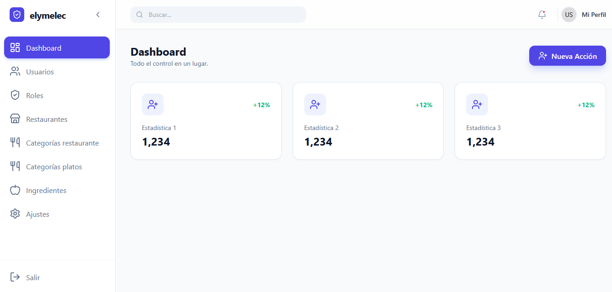

Vue.js
Axios
Vue.js
JWT
Apis
Sistema Admin
Plataforma integral para la gestión de pedidos, reservas y control de inventario en tiempo real para.

Sobre la Solución
Este sistema tiene como función realizar las tareas administrativas del sistema de restaurantes. llevar el control de los datos que solo puede ver los administradores.
Características Principales
-
Sistema aparte del principal para gestionar.